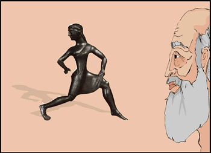

|

Dieneces' grandfather had smiled at this point in his tale: "Sparta produced beautiful things as her wealth increased. Ivory carvings that were desired across Greek lands; bronze-work; pottery that was exported to Italy and poetry. But our power over the Helots had other consequences". | |
| ...previous | next... |